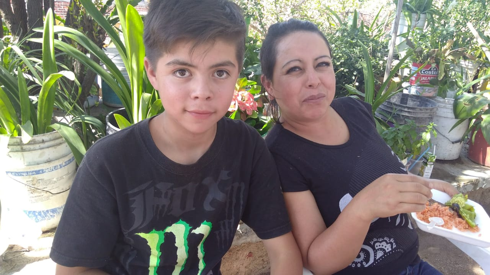

Asusena Gonzalez Lona
Es originaria de El Coyote Gto, creció en el campo es de las hermanas mayores de una familia de nueve hermanos y dese joven trabajo en el campo para poder sacar a adelante a su familia, aunque siempre fue retraída con los demás es una gran persona, logro llegar a la universidad peto no la termino, eso no fue un obstáculo pues estudio estilismo en una academia privada y ejerce como panadera en su comunidad natal repartiendo pan por las comunidades, actualmente tiene un hijo y esta casada creando su historia.
Descripcion
Datos
Tia/Mama adoptiva
Edad:36 años;
Alias: Susa;
Aficiones:
Panaderia
Agrucultura